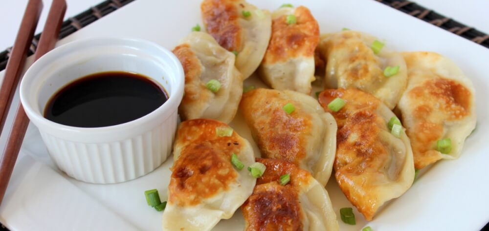
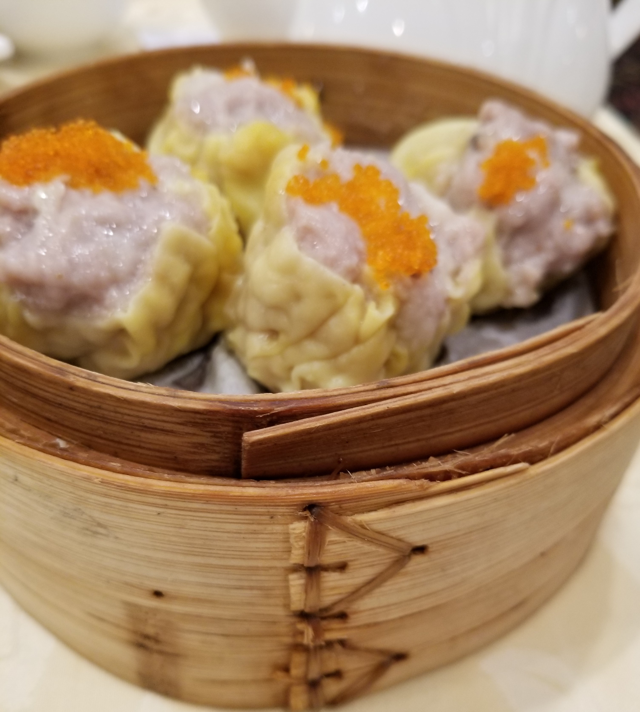

Dumplings are a popular Chinese dish. There are many forms of dumpling. In Dim Sum they can be fried, steamed or pan fried. Dumplings can be filled with anything and there is something for you.
Deep Fried Pork Dumpling - 鹹水角

The Deep Fried Dumping is a sweet and savoury dumpling. The dumpling is filled with pork and vegetables. The dough is crunchy on the outside and sweet and soft in the inside. The filling is usually pre-cooked. This is an amazing dish as it has a combination of textures and flavours that work well together.
Guotie - 鍋貼
The translation of Guotie is potstickers. This is a pan-fried dumpling. The filling includes pork, cabbage and scallions. This dumpling is dipped in hot sauce, soy sauce or chili sauce.
Pork Dumpling - 烧卖
The pork dumpling is also known as Shumai. In some images, it may not look like a traditional dumpling that all depends on how the restaurant makes the dumpling. The wrapping of is made of thin dumpling dough. The pork is marinated and sometimes mixed with vegetables or shrimp for more flavour and crunch. The garnish of the pork dumpling can be carrots or fish eggs.
Shrimp Dumpling - 蝦餃

This is also known as Har Gao, this dish is a steamed dish that is stuffed with shrimp. The wrapping is transparent and smooth. Depending on the restaurant, they can add some garlic or onion into the stuffing for more flavour. You can also dip the shrimp dumpling into hot sauce or soy sauce.
Xiaolongbao - 小笼包

This dish can be both a bun and dumpling. This dish is also known as the Shanghai Dumpling however the translation is a little steamed bun. It is usually stuffed with pork but can be stuffed with other types of meat and vegetables. What makes this dish like a dumpling is it contains broth. The broth makes the Xiao Long Bao very moist causing it to be a dumpling. It is really difficult to find this dish at dim sum restaurants. If you want to try this dish we recommend going to a dumpling restaurant.
Overall there are many types of dumplings. Dumplings can be made either steamed or fried. Dumplings have many fillings that there is certainly something for you.
News
We are slowly going to review restaurants other than Chinese restaurants. If you would like us to review your restaurant contact us! Visit our about page for more information
Updates
We constantly update our website. New food and restaurants are going to be posted. Check our updates for more information.
Our Latest Post: Dumplings

Restaurant of The Month